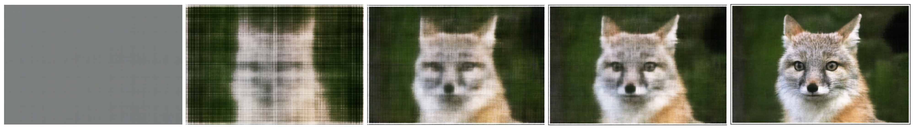
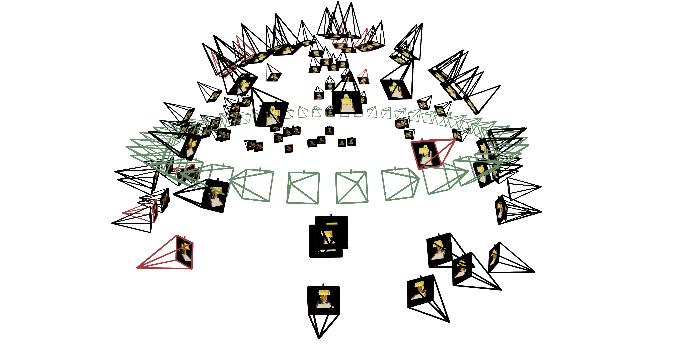
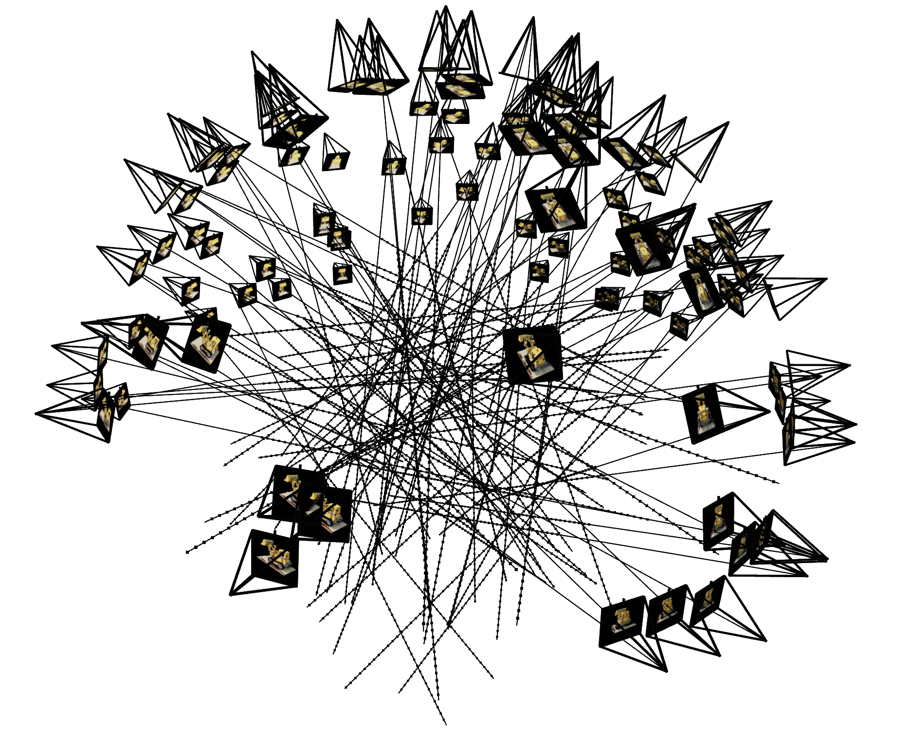
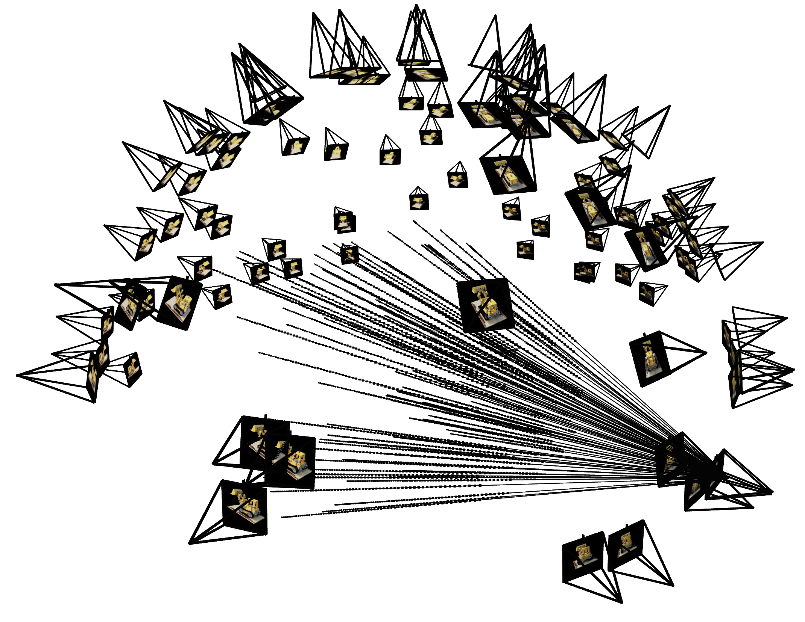
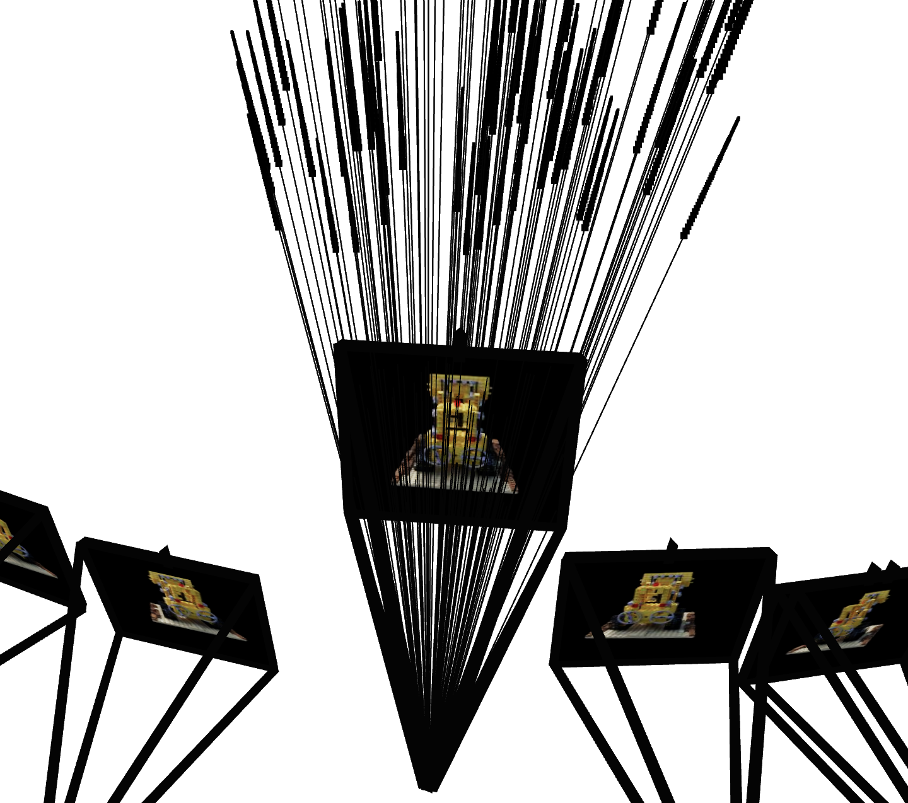
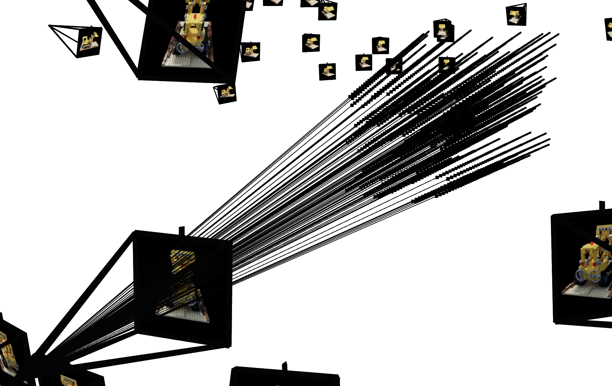
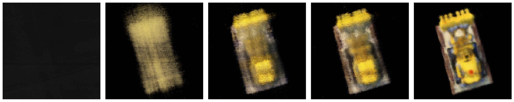

Programming Project #4 (proj4)
Programming Project #4 (proj4)CS180: Intro to Computer Vision and Computational Photography
Programming Project #4 (proj4)
For the first part of the assignment, you will take a 3D scan of your own object which you will build a NeRF of later!
To do this, we will use visual tracking targets called ArUco tags,
which provide a way to reliably detect the same 3D keypoints across different images. There are 2 parts: 1) calibrating your camera
parameters, and 2) using them to estimate pose. This part can be done entirely locally on your laptop, no need for a GPU. We will be using
many helper functions from OpenCV, which you can install with pip install opencv-python.
First, either print out the following calibration tags or pull them up on a laptop/iPad screen. Capture 30-50 images of these tags from your phone camera, keeping the zoom the same. While capturing, results will be best if you vary the angle/distance of the camera, like shown in chessboard calibration in lecture.
Note: For the purpose of this assignment, phone cameras work better since they provide undistorted images without lens effects. If you use a real camera, try to make sure there are no distortion effects.
Now you'll write a script to calibrate your camera using the images you captured. Here's the pipeline:
cv2.calibrateCamera() to compute the camera intrinsics and distortion coefficientsImportant: Your code should handle cases where tags aren't detected in some images (this is common). Make sure to check if tags were found before trying to use the detection results, otherwise your script will crash.
Here's a code snippet to get you started with detecting ArUco tags (the tags in the PDF are 4x4):
import cv2
import numpy as np
# Create ArUco dictionary and detector parameters (4x4 tags)
aruco_dict = cv2.aruco.getPredefinedDictionary(cv2.aruco.DICT_4X4_50)
aruco_params = cv2.aruco.DetectorParameters()
# Detect ArUco markers in an image
# Returns: corners (list of numpy arrays), ids (numpy array)
corners, ids, _ = cv2.aruco.detectMarkers(image, aruco_dict, parameters=aruco_params)
# Check if any markers were detected
if ids is not None:
# Process the detected corners
# corners: list of length N (number of detected tags)
# - each element is a numpy array of shape (1, 4, 2) containing the 4 corner coordinates (x, y)
# ids: numpy array of shape (N, 1) containing the tag IDs for each detected marker
# Example: if 3 tags detected, corners will be a list of 3 arrays, ids will be shape (3, 1)
else:
# No tags detected in this image, skip it
pass
Next, pick a favorite object of yours, and print out a single ArUco tag, which you can generate from here. Place the object next to the tag on a tabletop, and capture 30-50 images of the object from different angles. Important: Use the same camera and zoom level as you did for calibration. If you cut out the ArUco tag from a piece of paper, make sure to leave a white border around it, otherwise detection will fail.
Capture tips for good quality NeRF results later:
Now that you have calibrated your camera, you can use those intrinsic parameters to estimate the camera pose (position and orientation) for each image of your object. As discussed in lecture, this is the classic Perspective-n-Point (PnP) problem: given a set of 3D points in world coordinates and their corresponding 2D projections in an image, we want to find the camera's extrinsic parameters (rotation and translation).
For each image in your object scan, you'll detect the single ArUco tag and use cv2.solvePnP() to estimate the camera pose.
Here's what you need:
Inputs to solvePnP:
detectMarkers()).
You'll need to reshape the corners array from detectMarkers to match this shape.Output from solvePnP:
cv2.Rodrigues())
Together, the rotation matrix R (from rvec) and translation vector tvec form the camera's extrinsic matrix, which describes where the camera is positioned and oriented relative to the ArUco tag's coordinate system (which we're treating as the world origin).
Important: Just like in Part 0.1, make sure your code handles cases where the tag isn't detected in some images. You should skip those images rather than letting your code crash.
To help visualize your pose estimation results, you can use the following code snippet to display a camera frustum in 3D:
import viser
import numpy as np
server = viser.ViserServer(share=True)
# Example of visualizing a camera frustum (in practice loop over all images)
# c2w is the camera-to-world transformation matrix (3x4), and K is the camera intrinsic matrix (3x3)
server.scene.add_camera_frustum(
f"/cameras/{i}", # give it a name
fov=2 * np.arctan2(H / 2, K[0, 0]), # field of view
aspect=W / H, # aspect ratio
scale=0.02, # scale of the camera frustum change if too small/big
wxyz=viser.transforms.SO3.from_matrix(c2w[:3, :3]).wxyz, # orientation in quaternion format
position=c2w[:3, 3], # position of the camera
image=img # image to visualize
)
Now that you have the camera intrinsics and pose estimates, the final step is to undistort your images and package everything into a dataset format that you can use for training NeRF in the later parts of this project.
First, use cv2.undistort() to remove any lens distortion from your images. This is important because NeRF assumes a perfect
pinhole camera model without distortion.
import cv2
# Undistort an image using the calibration results
undistorted_img = cv2.undistort(img, camera_matrix, dist_coeffs)
After undistorting all your images, you'll need to save everything in a .npz file format that matches what's expected for the
NeRF training code. You should split your images into training, validation, and test sets, then save using the following keys:
You can save your dataset using np.savez():
import numpy as np
# Package your data (keep images in 0-255 range, they'll be normalized when loaded)
np.savez(
'my_data.npz',
images_train=images_train, # (N_train, H, W, 3)
c2ws_train=c2ws_train, # (N_train, 4, 4)
images_val=images_val, # (N_val, H, W, 3)
c2ws_val=c2ws_val, # (N_val, 4, 4)
c2ws_test=c2ws_test, # (N_test, 4, 4)
focal=focal # float
)
This dataset can then be loaded in Parts 1 and 2 the same way the provided lego dataset is loaded, allowing you to train a NeRF on your own captured object!
From the lecture we know that we can use a Neural Radiance Field (NeRF) (\(F: \{x, y, z, \theta, \phi\} \rightarrow \{r, g, b, \sigma\}\)) to represent a 3D space. But before jumping into 3D, let's first get familar with NeRF (and PyTorch) using a 2D example. In fact, since there is no concept of radiance in 2D, the Neural Radiance Field falls back to just a Neural Field (\(F: \{u, v\} \rightarrow \{r, g, b\}\)) in 2D, in which \(\{u, v\}\) is the pixel coordinate. In this section, we will create a neural field that can represent a 2D image and optimize that neural field to fit this image. You can start from this image, but feel free to try out any other images.
[Impl: Network] You would need to create an Multilayer Perceptron (MLP) network with Sinusoidal Positional Encoding (PE) that takes in the 2-dim pixel coordinates, and output the 3-dim pixel colors.

[Impl: Dataloader] If the image is with high resolution, it might be not feasible train the network with the all the pixels in every iteration due to the GPU memory limit. So you need to implement a dataloader that randomly sample \(N\) pixels at every iteration for training. The dataloader is expected to return both the \(N\times2\) 2D coordinates and \(N\times3\) colors of the pixels, which will serve as the input to your network, and the supervision target, respectively (essentially you have a batch size of \(N\)). You would want to normalize both the coordinates (x = x / image_width, y = y / image_height) and the colors (rgbs = rgbs / 255.0) to make them within the range of [0, 1].
[Impl: Loss Function, Optimizer, and Metric] Now that you have the network (MLP) and the dataloader, you need to define the loss function and the optimizer before you can start training your network. You will use mean squared error loss (MSE) (torch.nn.MSELoss) between the predicted color and the groundtruth color. Train your network using Adam (torch.optim.Adam) with a learning rate of 1e-2. Run the training loop for 1000 to 3000 iterations with a batch size of 10k. For the metric, MSE is a good one but it is more common to use Peak signal-to-noise ratio (PSNR) when it comes to measuring the reconstruction quality of a image. If the image is normalized to [0, 1], you can use the following equation to compute PSNR from MSE: \[PSNR = 10 \cdot log_{10}\left(\frac{1}{MSE}\right)\]
[Impl: Hyperparameter Tuning] Try varying two of the hyperparameters (number of layers, channel size, max frequency \(L\) for the positional encoding, or learning rate) and show how it affects (or doesn't affect) the performance of your network.

[Deliverables] As a reference, the above images show the process of optimizing the network to fit on this image.
Now that we are familiar with using a neural field to represent a image, we can proceed to a more interesting task that using a neural radiance field to represent a 3D space, through inverse rendering from multi-view calibrated images. For this part we are going to use the Lego scene from the original NeRF paper, but with lower resolution images (200 x 200) and preprocessed cameras (downloaded from here). The following code can be used to parse the data. The figure on its right shows a plot of all the cameras, including training cameras in black, validation cameras in red, and test cameras in green.
data = np.load(f"lego_200x200.npz")
# Training images: [100, 200, 200, 3]
images_train = data["images_train"] / 255.0
# Cameras for the training images
# (camera-to-world transformation matrix): [100, 4, 4]
c2ws_train = data["c2ws_train"]
# Validation images:
images_val = data["images_val"] / 255.0
# Cameras for the validation images: [10, 4, 4]
# (camera-to-world transformation matrix): [10, 200, 200, 3]
c2ws_val = data["c2ws_val"]
# Test cameras for novel-view video rendering:
# (camera-to-world transformation matrix): [60, 4, 4]
c2ws_test = data["c2ws_test"]
# Camera focal length
focal = data["focal"] # float

Camera to World Coordinate Conversion. The transformation between the world space \(\mathbf{X_w} = (x_w, y_w, z_w)\) and the
camera space \(\mathbf{X_c} = (x_c, y_c, z_c)\) can be defined as a rotation matrix \(\mathbf{R}_{3\times3}\) and a translation vector
\(\mathbf{t}\): \[\begin{align} \begin{bmatrix} x_c \\ y_c \\ z_c \\ 1 \end{bmatrix} = \begin{bmatrix} \mathbf{R}_{3\times3} &
\mathbf{t} \\ \mathbf{0}_{1\times3} & 1 \end{bmatrix} \begin{bmatrix} x_w \\ y_w \\ z_w \\ 1 \end{bmatrix} \end{align}\] in which
\(\begin{bmatrix} \mathbf{R}_{3\times3} & \mathbf{t} \\ \mathbf{0}_{1\times3} & 1 \end{bmatrix}\) is called world-to-camera
(w2c) transformation matrix, or extrinsic matrix. The inverse of it is called camera-to-world (c2w)
transformation matrix.
[Impl] In this session you would need to implement a function x_w = transform(c2w, x_c) that transform a point
from camera to the world space. You can verify your implementation by checking if the follow statement is always true:
x == transform(c2w.inv(), transform(c2w, x)). Note you might want your implementation to support batched coordinates for
later use. You can implement it with either numpy or torch.
Pixel to Camera Coordinate Conversion. Consider a pinhole camera with focal length \((f_x, f_y)\) and principal point \((o_x = \text{image_width} / 2, o_y = \text{image_height} / 2)\), it's intrinsic matrix \(\mathbf{K}\) is defined as: \[\begin{align} \mathbf{K} = \begin{bmatrix} f_x & 0 & o_x \\ 0 & f_y & o_y \\ 0 & 0 & 1 \end{bmatrix} \end{align}\] which can be used to project a 3D point \((x_c, y_c, z_c)\) in the camera coordinate system to a 2D location \((u, v)\) in pixel coordinate system : \[\begin{align} s \begin{bmatrix} u \\ v \\ 1 \end{bmatrix} = \mathbf{K} \begin{bmatrix} x_c \\ y_c \\ z_c \end{bmatrix} \end{align}\] in which \(s=z_c\) is the depth of this point along the optical axis.
[Impl] In this session you would need to implement a function that invert the aforementioned process, which transform a point
from the pixel coordinate system back to the camera coordinate system: x_c = pixel_to_camera(K, uv, s). Similar to the
previous session, you might also want your implementation here to support batched coordinates for later use. You can implement it with
either numpy or torch.
Pixel to Ray. A ray can be defined by an origin \(\mathbf{r}_o \in R^3\) vector and a direction \(\mathbf{r}_d \in R^3\) vector. So in the case of pinhole camera, we want to know the \(\{\mathbf{r}_o, \mathbf{r}_d\}\) for every pixel \((u, v)\). The origin \(\mathbf{r}_o\) of those rays are eazy to get because it is just the location of the cameras: \[\begin{align} \mathbf{r}_o = -\mathbf{R}_{3\times3}^{-1}\mathbf{t} \end{align}\] To calculate the ray direction for pixel \((u, v)\), we can simply choose a point along this ray with depth equals 1 (\(s=1\)) and find its coordinate in the world space \(\mathbf{X_w} = (x_w, y_w, z_w)\). Then the normalized ray direction can be computed by: \[\begin{align} \mathbf{r}_d = \frac{\mathbf{X_w} - \mathbf{r}_o}{||\mathbf{X_w} - \mathbf{r}_o||_2} \end{align}\]
[Impl] In this session you would need to implement this function that convert a pixel coordinate to a ray with origin and
noramlized direction: ray_o, ray_d = pixel_to_ray(K, c2w, uv). You might find your previously implemented functions
useful here. Similarly you might also want your implementation here to support batched coordinates.
[Impl: Sampling Rays from Images] In Part 1, we have done random sampling on a single image to get the pixel color and pixel coordinates. Here we can build on top of that, and with the camera intrinsics & extrinsics, we would be able to convert the pixel coordinates into ray origins and directions. Make sure to account for the offset from image coordinate to pixel center (this can be done simply by adding .5 to your UV pixel coordinate grid)! Since we have multiple images now, we have two options of sampling rays. Say we want to sample N rays at every training iteration, option 1 is to first sample M images, and then sample N // M rays from every image. The other option is to flatten all pixels from all images and do a global sampling once to get N rays from all images. You can choose which ever way do ray sampling.
[Impl: Sampling Points along Rays.] After having rays, we also need to discritize each ray into samples that live in the 3D
space. The simplist way is to uniformly create some samples along the ray (t = np.linspace(near, far, n_samples)). For
the lego scene that we have, we can set near=2.0 and far=6.0. The actually 3D corrdinates can be accquired
by \(\mathbf{x} = \mathbf{R}_o + \mathbf{R}_d * t\). However this would lead to a fixed set of 3D points, which could potentially lead
to overfitting when we train the NeRF later on. On top of this, we want to introduce some small perturbation to the points
only during training, so that every location along the ray would be touched upon during training. this can be achieved by
something like t = t + (np.random.rand(t.shape) * t_width) where t is set to be the start of each interval. We recommend
to set n_samples to 32 or 64 in this project.
Similar to Part 1, you would need to write a dataloader that randomly sample pixels from multiview images. What is different with Part 1, is that now you need to convert the pixel coordinates into rays in your dataloader, and return ray origin, ray direction and pixel colors from your dataloader. To verify if you have by far implement everything correctly, we here provide some visualization code to plot the cameras, rays, and samples in 3D. We additionally recommend you try this code with rays sampled only from one camera so you can make sure that all the rays stay within the camera frustum and eliminating the possibility of other smaller harder to catch bugs.
import viser, time # pip install viser
import numpy as np
# --- You Need to Implement These ------
dataset = RaysData(images_train, K, c2ws_train)
rays_o, rays_d, pixels = dataset.sample_rays(100) # Should expect (B, 3)
points = sample_along_rays(rays_o, rays_d, perturb=True)
H, W = images_train.shape[1:3]
# ---------------------------------------
server = viser.ViserServer(share=True)
for i, (image, c2w) in enumerate(zip(images_train, c2ws_train)):
server.add_camera_frustum(
f"/cameras/{i}",
fov=2 * np.arctan2(H / 2, K[0, 0]),
aspect=W / H,
scale=0.15,
wxyz=viser.transforms.SO3.from_matrix(c2w[:3, :3]).wxyz,
position=c2w[:3, 3],
image=image
)
for i, (o, d) in enumerate(zip(rays_o, rays_d)):
server.add_spline_catmull_rom(
f"/rays/{i}", positions=np.stack((o, o + d * 6.0)),
)
server.add_point_cloud(
f"/samples",
colors=np.zeros_like(points).reshape(-1, 3),
points=points.reshape(-1, 3),
point_size=0.02,
)
time.sleep(1000)
# Visualize Cameras, Rays and Samples
import viser, time
import numpy as np
# --- You Need to Implement These ------
dataset = RaysData(images_train, K, c2ws_train)
# This will check that your uvs aren't flipped
uvs_start = 0
uvs_end = 40_000
sample_uvs = dataset.uvs[uvs_start:uvs_end] # These are integer coordinates of widths / heights (xy not yx) of all the pixels in an image
# uvs are array of xy coordinates, so we need to index into the 0th image tensor with [0, height, width], so we need to index with uv[:,1] and then uv[:,0]
assert np.all(images_train[0, sample_uvs[:,1], sample_uvs[:,0]] == dataset.pixels[uvs_start:uvs_end])
# # Uncoment this to display random rays from the first image
# indices = np.random.randint(low=0, high=40_000, size=100)
# # Uncomment this to display random rays from the top left corner of the image
# indices_x = np.random.randint(low=100, high=200, size=100)
# indices_y = np.random.randint(low=0, high=100, size=100)
# indices = indices_x + (indices_y * 200)
data = {"rays_o": dataset.rays_o[indices], "rays_d": dataset.rays_d[indices]}
points = sample_along_rays(data["rays_o"], data["rays_d"], random=True)
# ---------------------------------------
server = viser.ViserServer(share=True)
for i, (image, c2w) in enumerate(zip(images_train, c2ws_train)):
server.add_camera_frustum(
f"/cameras/{i}",
fov=2 * np.arctan2(H / 2, K[0, 0]),
aspect=W / H,
scale=0.15,
wxyz=viser.transforms.SO3.from_matrix(c2w[:3, :3]).wxyz,
position=c2w[:3, 3],
image=image
)
for i, (o, d) in enumerate(zip(data["rays_o"], data["rays_d"])):
positions = np.stack((o, o + d * 6.0))
server.add_spline_catmull_rom(
f"/rays/{i}", positions=positions,
)
server.add_point_cloud(
f"/samples",
colors=np.zeros_like(points).reshape(-1, 3),
points=points.reshape(-1, 3),
point_size=0.03,
)
time.sleep(1000)


[Impl: Network] After having samples in 3D, we want to use the network to predict the density and color for those samples in 3D. So you would create a MLP that is similar to Part 1, but with three changes:
Below is a structure of the network that you can start with:

The core volume rendering equation is as follows: \[\begin{align} C(\mathbf{r})=\int_{t_n}^{t_f} T(t) \sigma(\mathbf{r}(t)) \mathbf{c}(\mathbf{r}(t), \mathbf{d}) d t, \text { where } T(t)=\exp \left(-\int_{t_n}^t \sigma(\mathbf{r}(s)) d s\right) \end{align}\]
This fundamentally means that at every small step \(dt\) along the ray, we add the contribution of that small interval \([t, t + dt]\) to that final color, and we do the infinitely many additions if these infintesimally small intervals with an integral.
The discrete approximation (thus tractable to compute) of this equation can be stated as the following: \[\begin{align} \hat{C}(\mathbf{r})=\sum_{i=1}^N T_i\left(1-\exp \left(-\sigma_i \delta_i\right)\right) \mathbf{c}_i, \text { where } T_i=\exp \left(-\sum_{j=1}^{i-1} \sigma_j \delta_j\right) \end{align}\] where \(\textbf{c}_i\) is the color obtained from our network at sample location \(i\), \(T_i\) is the probability of a ray not terminating before sample location \(i\), and \(1 - e^{-\sigma_i \delta_i}\) is the probability of terminating at sample location \(i\).
If your volume rendering works, the following snippet of code should pass the assert statement:
import torch
torch.manual_seed(42)
sigmas = torch.rand((10, 64, 1))
rgbs = torch.rand((10, 64, 3))
step_size = (6.0 - 2.0) / 64
rendered_colors = volrend(sigmas, rgbs, step_size)
correct = torch.tensor([
[0.5006, 0.3728, 0.4728],
[0.4322, 0.3559, 0.4134],
[0.4027, 0.4394, 0.4610],
[0.4514, 0.3829, 0.4196],
[0.4002, 0.4599, 0.4103],
[0.4471, 0.4044, 0.4069],
[0.4285, 0.4072, 0.3777],
[0.4152, 0.4190, 0.4361],
[0.4051, 0.3651, 0.3969],
[0.3253, 0.3587, 0.4215]
])
assert torch.allclose(rendered_colors, correct, rtol=1e-4, atol=1e-4)[Impl] Here you will implement the volume rendering equation for a batch of samples along a ray. This rendered color is what we will compare with our posed images in order to train our network. You would need to implement this part in torch instead of numpy because we need the loss to be able to backpropagate through this part. A hint is that you may find torch.cumsum or torch.cumprod useful here.
[Deliverables] As a reference, the images below show the process of optimizing the network to fit on our lego multi-view images from a novel view. The staff solution reaches above 23 PSNR with 1000 gradient steps and a batchsize of 10K rays per gradent step. The staff solution uses an Adam optimizer with a learning rate of 5e-4. For guaranteed full credit, achieve 23 PSNR for any number of iterations.

c2ws_test in the npz file). You should be
get a video like this (left is 10 after minutes training, right is 2.5 hrs training):
{kind=link}